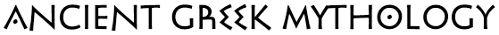
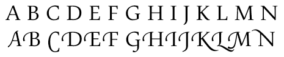
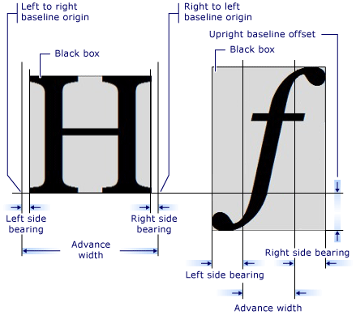

title: Glyphs and Glyph Runs description: Glyphs and glyph runs are available at the lowest layer of functionality of the DirectWrite API, the glyph-rendering layer. ms.assetid: e670cb65-1fcb-46fd-ac0b-02eaaaa51996 keywords:
Glyphs and glyph runs are available at the lowest layer of functionality of the DirectWrite API, the glyph-rendering layer.
A glyph is a physical representation of a character in a given font. Characters might have many glyphs, with each font on a system potentially defining a different glyph for that character.
Two or more glyphs can also be combined into a single glyph, this process is called glyph composition. This can also be done in the opposite direction, a single glyph being split into multiple glyphs, known as glyph decomposition.
Fonts may provide alternate glyphs for characters, such as the stylistic alternate glyphs for the Pericles OpenType font, as shown in the following screen shot. The 'A', 'E', and 'O' characters are rendered with stylistic alternate glyphs.

Another example of alternate glyphs are swash glyphs. The following screen shot shows standard and swash glyphs for the Pescadero font.

Swashes and other typographic features, including more elaborate alternate glyphs, are available through OpenType. OpenType typographic features can be applied to a text range by using the IDWriteTextLayout::SetTypography and passing the DWRITE_FONT_FEATURE_TAG enumeration constant associated with the desired feature.
A glyph run represents a contiguous set of glyphs that all have the same font face and size, as well as the same client drawing effect, if any. Underline and strikethrough are not part of the glyph run for the text range they are applied to, and are drawn later. Inline objects, such as images, are also drawn separately, as they are not part of a font.
DirectWrite uses the same system for font classification as Windows Presentation Foundation (WPF), so there can be multiple physical fonts per each font family. A font face, such as the IDWriteFontFace interface in DirectWrite, represents a physical font, with a specific weight, slant, and stretch. It contains the font face type, appropriate file references, face identification data and various font data such as metrics, names and glyph outlines.
The IDWriteFontFace can be created directly from a font name or obtained from a font collection.
Individual glyphs have metrics associated with them. You can obtain the metrics for all of the glyphs in a glyph run by using the IDWriteFontFace::GetDesignGlyphMetrics method. This returns a DWRITE_GLYPH_METRICS structure that has the advance width, the left and right side bearing, the top and bottom side bearing, the height and the vertical baseline origin.
The following diagram shows various metrics of two different glyph characters.

When implementing a custom text renderer, the rendering of glyphs is handled by the IDWriteTextRenderer::DrawGlyphRun, a callback method that you implement as part of a class derived from IDWriteTextRenderer. The DWRITE_GLYPH_RUN structure that is passed to DrawGlyphRun contains a IDWriteFontFace object, named fontFace, that represents the font face for the entire glyph run.
The IDWriteFontFace object also provides the GetGlyphRunOutline method, which computes the glyph outlines by using a specified geometry sink callback, such as ID2D1SimplifiedGeometrySink when rendering with Direct2D.
For more information, see the How to Implement a Custom Text Renderer topic.
Â
Â